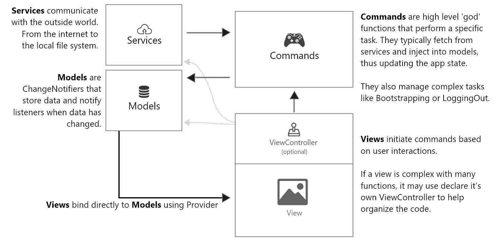

Code Project Flutter Folio
Overview:
The code project you will be investigating in this experiment is the scrapbooking app Flutter Folio developed by gskinner. The app is available on mobile, web and desktop. A scrapbook is a book of blank pages for sticking cuttings, drawings, or pictures in. In this digital version, users can upload images to a scrapbook (called folio). Other scraps, which may be added to a page of the scrapbook include text fields and emojis. The app also allows the user to share scrapbooks by providing a link to the scrapbook.
Main App features:
- Creating and naming a scrapbook (called folio)
- Adding pages to the scrapbook
- Uploading images to the pages
- Resizing the images
- Adding scraps (example: text, emojis) to a page
- Creating a sharable link to the scrapbook
Creadentials:
- Email: (test email adress)
- Password: (test password)
Architecture Overview
To contextualise the file structure of the Flutter Folio app project, please take a quick look at the app's architecture below, which is a slightly adjusted version of Model-View-Controller (MVC).
This is only meant to help you navigate
the file structure and you are not required to memorise it.
